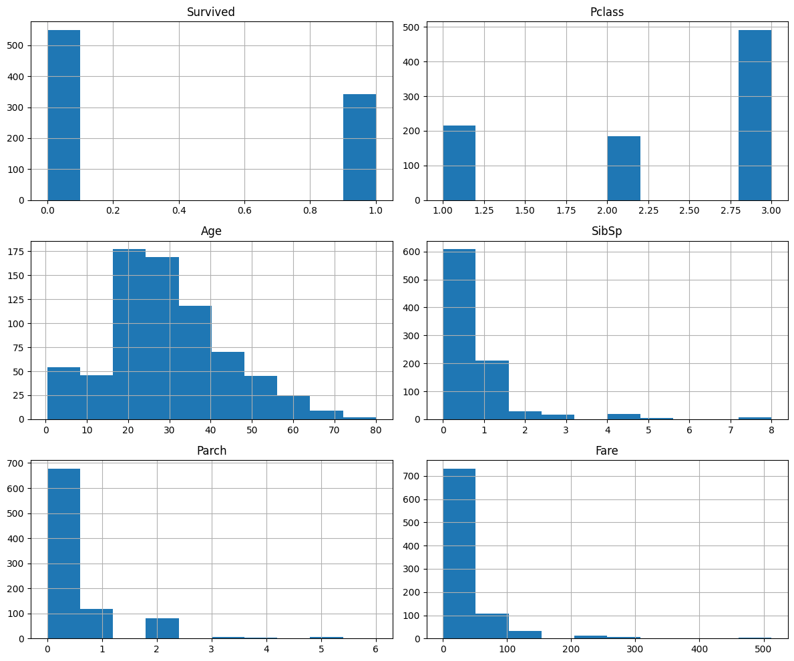
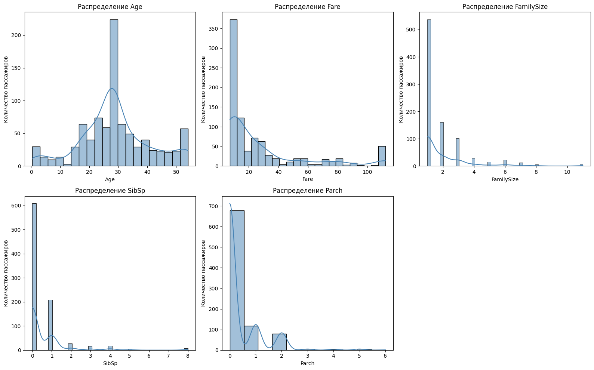
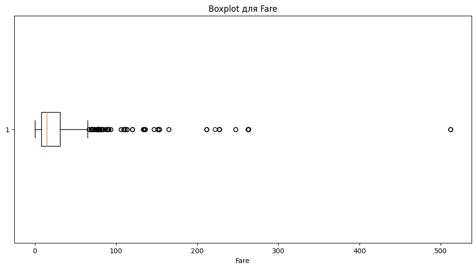
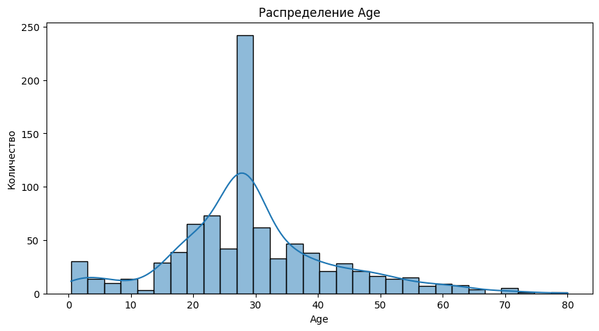
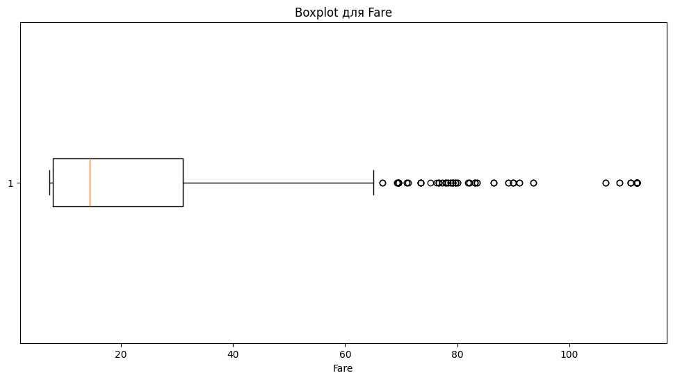
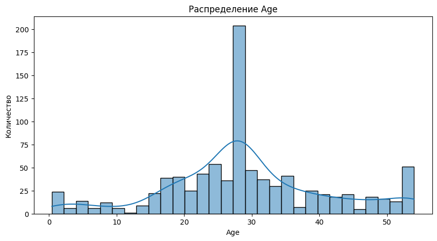
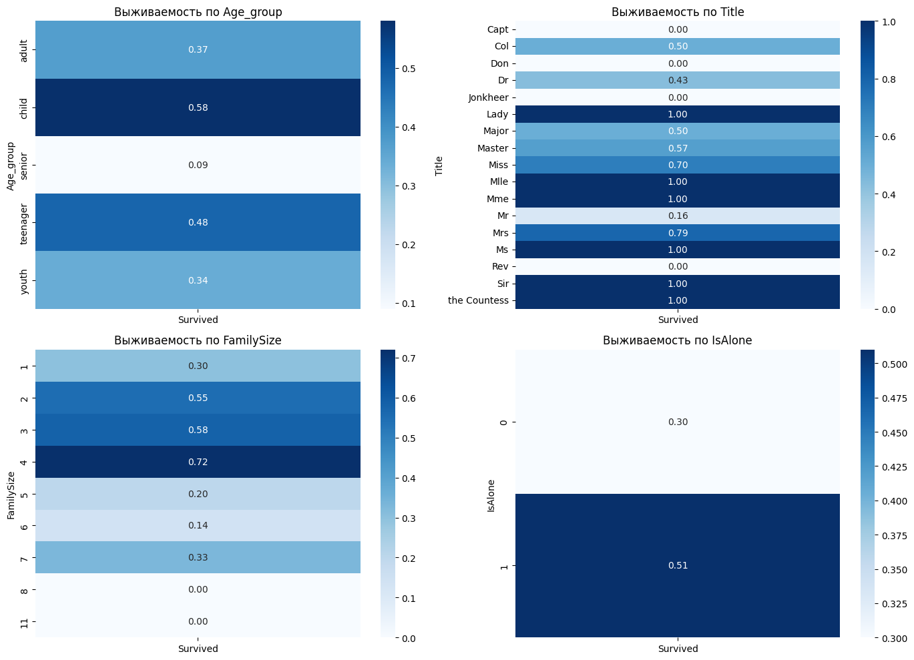
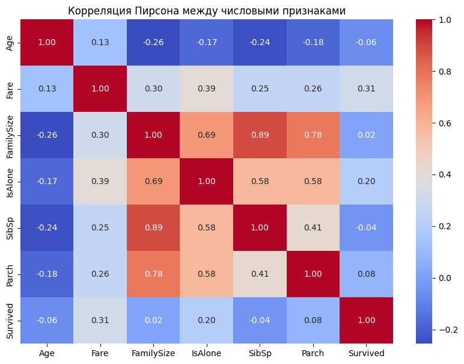
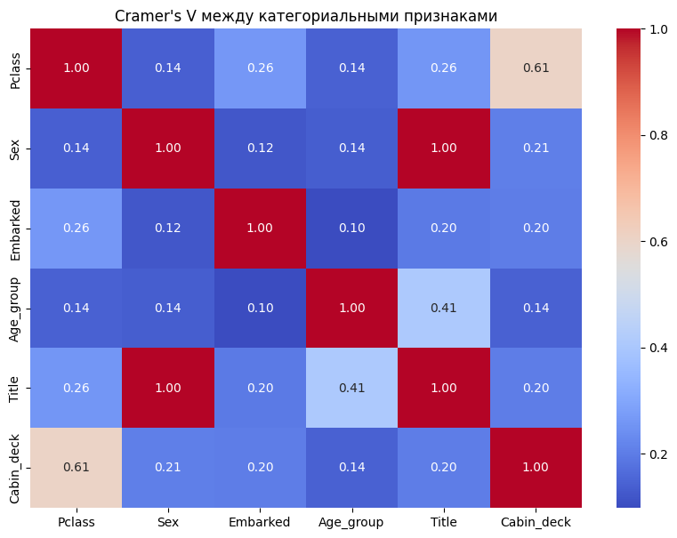

Лабораторная работа №6
Очистка и трансформация данных. pandas (P3123)
Выполнил: Пушкин Иван Алексеевич, группа P3123
1. Введение
Данная лабораторная работа посвящена изучению методов очистки и трансформации данных с использованием библиотеки pandas на примере реального датасета Titanic с платформы Kaggle.
2. Цель работы
Освоение методов очистки и трансформации данных с использованием библиотеки pandas на примере реальных данных из Kaggle.
3. Теоретические сведения
Основные понятия:
- Предобработка данных — подготовка данных к анализу
- Очистка данных — устранение ошибок и пропусков
- Трансформация данных — преобразование данных для анализа
- Pandas — библиотека для работы с данными в Python
4. Описание набора данных
Dataset: Titanic (https://www.kaggle.com/c/titanic/data)
| Признак | Описание |
|---|---|
| PassengerId | Идентификатор пассажира |
| Survived | Выжил ли пассажир (0 = нет; 1 = да) |
| Pclass | Класс билета |
| Name | Имя |
| Sex | Пол |
| Age | Возраст |
| SibSp | Количество братьев/сестёр/супругов на борту |
| Parch | Количество родителей/детей на борту |
| Ticket | Номер билета |
| Fare | Стоимость билета |
| Cabin | Номер каюты |
| Embarked | Порт посадки |
5. Первичный анализ
Статистика датафрейма
После загрузки данных были выведены первые 10 строк, типы данных и статистические характеристики числовых признаков (train.describe()).
Основные наблюдения:
- Всего 891 пассажир и 12 признаков
- Числовые типы: int64 и float64
- Строковые типы: object
Визуализация пропусков
Выявленные пропуски:
| Столбец | Количество пропусков |
|---|---|
| Age | 177 |
| Cabin | 687 |
| Embarked | 2 |
Гистограммы распределения числовых признаков

6. Обработка пропусков
Методы заполнения
Age: среднее значение — ~29.7, медиана — 28.0. Пропуски заполнены медианой, так как она устойчива к выбросам.
Embarked: наиболее часто встречающееся значение — S (Southampton). Два пропуска заполнены модой.
Cabin: столбец содержит ~77% пропусков. Из первой буквы каюты создан новый признак Cabin_deck (палуба). Пассажирам без каюты присвоено значение U (Unknown). Исходный столбец удалён.
Результаты обработки
После обработки пропусков в датасете не осталось ни одного пустого значения.
7. Трансформация данных
Созданные признаки
| Признак | Описание |
|---|---|
| Age_group | Возрастная группа: Child / Teenager / Youth / Adult / Senior |
| Title | Обращение из имени: Mr, Mrs, Miss и т.д. |
| FamilySize | Размер семьи = SibSp + Parch + 1 |
| IsAlone | 1 — путешествует один, 0 — с семьёй |
| Cabin_deck | Палуба из первой буквы каюты |
Возрастные группы: - 0–12: Child - 13–17: Teenager - 18–25: Youth - 26–64: Adult - 65+: Senior
Преобразования типов
Pclass: числовой → строковый (1→F, 2→S, 3→T)Sex: строковый → числовой (male→0, female→1)Title: извлечён изNameс помощью регулярного выражения
Распределение числовых признаков после трансформации

8. Обработка выбросов
Выявленные выбросы
Для признака Fare построен boxplot. С помощью IQR-метода выявлено значительное количество выбросов — некоторые пассажиры первого класса платили до 512$.
IQR-метод: Q1 = 7.91, Q3 = 31.0, IQR = 23.09, верхняя граница = 65.6
Boxplot для Fare до обработки:

Распределение Age до обработки:

Методы обработки
- Winsorization для Fare: обрезка до 5-го и 95-го перцентиля
- Clip для Age: значения выше 95-го перцентиля заменены на граничное значение
Boxplot для Fare после обработки:

Распределение Age после обработки:

После обработки распределения стали значительно равномернее, экстремальные значения устранены.
9. Агрегация и анализ
Сводные статистики
Среднее выживание по классам:
| Класс | Доля выживших |
|---|---|
| F (1-й) | ~0.63 |
| S (2-й) | ~0.47 |
| T (3-й) | ~0.24 |
Медианный возраст по портам посадки:
| Порт | Медианный возраст |
|---|---|
| C (Cherbourg) | ~30 |
| Q (Queenstown) | ~22 |
| S (Southampton) | ~28 |
Визуализации выживаемости по новым признакам

Основные наблюдения: - Age_group: дети (0.58) выживали чаще взрослых и пожилых (0.09) - Title: женские обращения (Miss — 0.70, Mrs — 0.79, Lady/Ms/Mme — 1.0) показали высокую выживаемость; Mr — лишь 0.16 - FamilySize: семьи из 2–4 человек выживали чаще одиночек (0.30) и больших семей - IsAlone: одиночки (0.30) выживали реже тех, кто был с семьёй (0.51)
10. Метрики качества очистки данных
- Процент заполненных значений: 100% по всем столбцам после обработки
- Уникальные значения в категориальных признаках: Age_group — 5, Title — 17, Pclass — 3, Embarked — 3, Cabin_deck — 9
Корреляция Пирсона (числовые признаки)

Сильные связи:
- SibSp и FamilySize (r = 0.89) — братья/сёстры входят в размер семьи
- Parch и FamilySize (r = 0.78) — аналогично для родителей/детей
- Fare и Survived (r = 0.31) — более дорогие билеты связаны с выживаемостью
Cramer's V (категориальные признаки)

Сильные связи:
- Title и Sex (V = 1.0) — обращение полностью определяется полом
- Pclass и Cabin_deck (V = 0.61) — класс билета определяет палубу
- Age_group и Title (V = 0.41) — возрастная группа связана с обращением
11. Заключение
Результаты работы
В ходе лабораторной работы проведён полный цикл предобработки данных: - Загружен датасет Titanic (891 пассажир, 12 признаков) - Заполнены пропуски в Age и Embarked; из Cabin создан признак Cabin_deck - Создано 5 новых признаков: Age_group, Title, FamilySize, IsAlone, Cabin_deck - Обработаны выбросы в Fare и Age методом winsorization - Проведена агрегация и построены сводные таблицы выживаемости - Вычислены корреляции Пирсона и Cramer's V
Выводы
Наибольшее влияние на выживаемость оказывали пол, класс билета и размер семьи. Женщины и пассажиры первого класса выживали значительно чаще. Пассажиры, путешествовавшие в одиночку, выживали реже тех, кто был с семьёй среднего размера (2–4 человека). Высокая корреляция между SibSp/Parch и FamilySize подтверждает, что новый признак успешно объединяет информацию о родственниках на борту.
Ссылка на ноутбук: Открыть в Google Colab